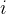
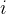

| テスト理論 |
| テスト理論 |
項目特性曲線については、2.4 で紹介した。 項目反応理論では、それぞれの項目の持つ特徴は、すべて項目特性曲線によって記述される。 Figure 7 は、Figure 4 で見た3項目の特徴に準じて、項目反応理論における項目特性曲線を滑らかに描いたものである。 ただし、Figure 4 がテストの合計得点を横軸、それぞれの合計得点を取った回答者のその項目の平均得点を縦軸に取っていたのに対し、Figure 7 では、横軸は潜在的な能力特性 となっている。 また、縦軸は、その高さの能力値を持つ回答者がそれぞれの項目に正答する確率を表す。 能力値が高くなるにつれて、いずれの項目も正答確率が1に近づいていく。
となっている。 また、縦軸は、その高さの能力値を持つ回答者がそれぞれの項目に正答する確率を表す。 能力値が高くなるにつれて、いずれの項目も正答確率が1に近づいていく。
今、正答を1, 誤答を0と表すとして、能力値 の回答者が項目
の回答者が項目 に正答する確率を と表すとする。つまり、これは条件付き確率である。
に正答する確率を と表すとする。つまり、これは条件付き確率である。
ここで、Figure 7 の項目特性曲線は、
| (99) |
によって描いたものである。 これは、ロジスティック曲線といわれるS字型のカーブを描く式である。 このうち、 は回答者の能力特性の高さであり、 と
と が項目の特徴を表すパラメータである。 これらを項目パラメータといい、 を能力パラメータなどという。 通常、は平均0、標準偏差1の標準正規分布に従うことが仮定される。
が項目の特徴を表すパラメータである。 これらを項目パラメータといい、 を能力パラメータなどという。 通常、は平均0、標準偏差1の標準正規分布に従うことが仮定される。
2つの項目パラメータによって項目の特徴を表す式 (99) は、項目反応理論の最もポピュラーなものである。 2つのパラメータによって項目特性曲線をロジスティック曲線として表すモデルということで、これを2パラメータロジスティックモデルとか、2母数ロジスティックモデルという。
Figure 8 を見ながら、項目パラメータの意味を考えてみよう。 まず、 となる の値、つまり正答できるかできないかが五分五分になるような能力値に注目する。 すると、項目1と項目2はで正答確率がとなるのに対し、項目3ではが必要である。 つまり、項目3は項目1と項目2よりも5割の確率で正答するのが難しい。 2パラメータロジスティックモデルでは、項目に正答できるかできないかが五分五分になるのに必要な能力値をその項目の困難度という。 これが式 (99) のである。
また、Figure 8 を見ると、項目1と項目3（）は、曲線の立ち上がりが項目2（）に比べて急である。 つまり、これらの項目の方が回答者の能力の違いをより敏感に識別することができる。 実際、赤、青、緑の線で示したように、項目パラメータは、において、項目特性曲線の接線の傾きに比例する。 よって、式(99) のを項目の識別力という。
ここで、困難度は、の全ての値における相対的な正答の難しさを表しているわけではないことに注意する必要がある。 実際、項目1と項目2は同じ困難度（）であるが、 の回答者は項目2により高確率で正答できるのに対し、の回答者は項目1により高確率で正答できる。 これは、項目により識別力に違いがあるためである。 一方、項目1と項目3は識別力が等しい（）ので、項目1はどのようなの回答者であっても、項目3より正答確率が高い。
| テスト理論 |